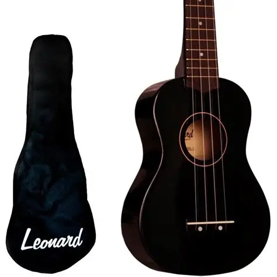
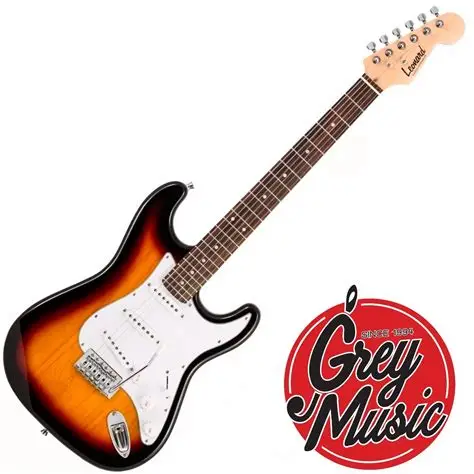
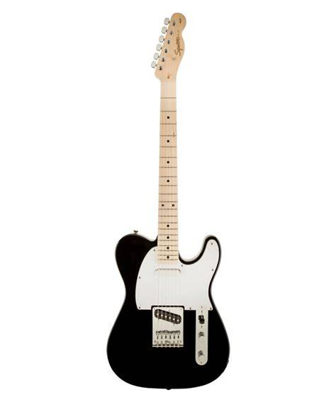
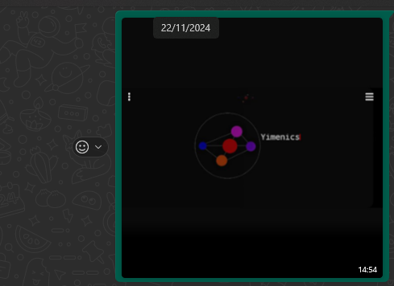
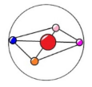

|
"pzmique"
"judío"
"Doc. Octopus"
Nací en el 2008, 14 de Abril. Y hoy en día tengo 17 años, siempre me gustó la computación y los juegos, pero hoy destaca el desarrollo web desde el diseño a la funcionalidad de una página.
Despues, también me gusta la música, desde los aprox. 12-13 años toco la guitarra, el ukulele y el piano. Aprendí autodidacticamente mucho por youtube viendo tablaturas y estudiando un poco de teoria musical. Despues de eso empecé acompañar en la música con la guitarra eléctrica en la Iglesia y hasta ahora toco todos los Sabados, Domingos y Miércoles.
Y hablando de Iglesia, soy creyente, un hijo de Dios, cristiano, que desde los 8 años me convertí a pesar de haber nacido en un ambiente "religioso" o cristiano mejor dicho, compartiendo la palabra de la biblia a seguir con un discipulado y una vida/comunión íntima entre Dios y yo, lo que llamamos la oración, que es la comunión, una conversación, un tiempo entre uno y Él.
Tengo como proyecto aprender otros lenguajes o profundizar como JS del lado del desarrollo "backend", base de datos, y por otra parte ser vendedor de páginas de compra/venta online. Así como páginas:
Despues quiero mandarme a la compra/venta de cosas, de meta como autos, emprender y levantar una concesionaria con mi viejo, y tenerla como empresa familiar, que hasta ahora no hemos generado ninguna y no estaría mal para la familia
Y me gustaria por otra parte dedicarme a la producción de música, componer canciones por DAWs usando sintetizadores y aprender todo el mambo con los beats y la conf/plugins útiles para componer, pero seria más que proyecto un deseo de hacer de la música un hobbie, porque no espero comer y vivir de la música aunque me guste.
Como dije antes, me gusta la música, el primer instrumento con el que empecé fue un ukulele Leonard
Despues pase a una guitarra eléctrica que tambien es marca Leonard
Y despues pase que hasta el día de hoy la sigo teniendo, una guitarra eléctrica modelo Telecaster marca Squier, y es con la que toco en la Iglesia desde hace tiempo
Mi otro hobbie es aveces cuando estoy aburrido armar cubos rubiks 3 x 3 y 2 x 2 que empezó en la pandemia, fue mi tiempo de agarrar cosas y aprenderlas como lo fue con la música, despues también por cuenta propia fue aprender como se hacia paginas web, porque teniamos con mis amigos con los que crecí una mini-empresa de cómics, que paso de llamarse Gimenics a Yimenics, y queriamos mandar todo por internet en una página, entonces me dispuse aprender a hacer una página de la empresa, y se convirtio en una especie de hobbie en la pandemia.
Esa página que se ve en la captura está hecha desde 2021, pero hasta el año pasado la conservé y perdí todo. Pero bueno, es un proyecto fallido, y tenemos otros planes.
Logo original de Yimenics año 2022
Y mi otro hobbie como último (no hago muchas cosas) es jugar, aunque ya mucho menos que cuando era chico, algunos que puedo listar son:
| Nombre del juego | Tiempo dedicado | Calificación |
|---|---|---|
| Superfighters (classic, o el deluxe) | 70hs | 10/10 |
| Roblox | +100hs (hace 9 años que lo juego) | 8/11 |
| Battlefield 4 | 30hs | 10/10 |
| Spiderman Marvel Remastered | 50hs | 10/10 |